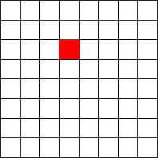
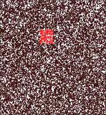
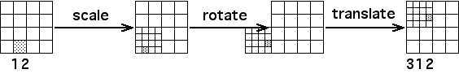

|  |  |
| To compare the regions with address 312 of problems 2 and 3, view the tranformations T3 as made of their respective components. |
| In problem 2, T3 is made of scale, reflect, and translate. |
 |
| In problem 2, T3 is made of scale, rotate, and translate. |
|  |
Return to Exercise 3.